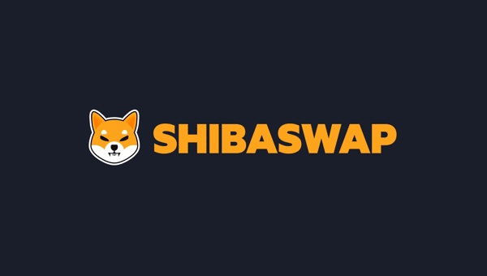

Best AI Website Creator
ShibaSwap represents the core decentralized finance (DeFi) engine powering the broader Shiba Inu (SHIB) ecosystem. Launched in July 2021 under the guidance of the pseudonymous lead developer Shytoshi Kusama, the platform marked a critical evolutionary leap for Shiba Inu. It transformed a community-driven project from a simple "meme coin" into a complex, utility-rich decentralized network.
Operating originally as an automated market maker (AMM) on the Ethereum blockchain, ShibaSwap enables permissionless asset trading, staking, and liquidity provisioning. It completely eliminates the need for centralized intermediaries like traditional banks or corporate crypto exchanges. To align with the cultural identity of its highly dedicated community—affectionately known as the ShibArmy—the platform cleverly adopts a playful, dog-themed lexicon to describe complex decentralized financial primitives.
🪙 The Tri-Token Economy: Understanding the Core Assets
Unlike standard decentralized applications that rely on a single native utility token, the economic design of ShibaSwap is uniquely sustained by three separate tokens. Each asset fulfills an distinct role within the network’s internal monetary ecosystem.
Shiba Inu (SHIB):
The Foundation: This is the primary transactional storefront and identity of the ecosystem.
Market Presence: Initially introduced as a decentralized community-building experiment, SHIB acts as the gateway token for millions of retail users entering the DeFi landscape. On ShibaSwap, it provides the deepest liquidity foundations.
Doge Killer (LEASH):
Exclusivity and Scarcity: Originally designed as a rebase token pegged to the price of Dogecoin, the protocol quickly shifted LEASH to operate as a completely fixed-supply asset.
Supply Metrics: With a total maximum circulating supply locked at just 107,646 tokens, LEASH represents the luxury tier of the ecosystem.
Platform Utility: Holding LEASH on ShibaSwap grants users priority access to specialized rewards, early minting phases for ecosystem NFTs (Shiboshis), and exclusive purchase rights for virtual land within the Shiba Metaverse.
Bone ShibaSwap (BONE):
Governance Matrix: Serving as the central operational backbone, BONE possesses a hard-capped supply of 250 million tokens.
Network Catalyst: It functions as the foundational governance token, enabling holders to vote on critical protocol parameters.
Blockchain Integration: With the successful mainnet deployment of Shibarium (the ecosystem’s dedicated Layer-2 scaling network), BONE serves as the native gas token required to pay for computing power and transaction validation across the entire L2 chain.
📊 Platform Infrastructure: The Six Pillars of ShibaSwap
The operational interface of ShibaSwap is organized into distinct financial pillars, each engineered to facilitate decentralized wealth creation, asset exchange, and long-term capital appreciation.
1. Swap (Asset Decentralized Exchange)
Mechanism: The core functionality allowing users to trade ERC-20 tokens directly out of their self-custody web3 wallets.
Liquidity Matching: Rather than relying on a centralized order book, the platform routes user trades through highly optimized liquidity pools.
slippage Management: Users maintain complete control over their trading parameters, allowing them to adjust slippage tolerances and transaction speeds manually depending on network congestion.
2. Dig (Liquidity Provisioning)
Capital Injection: The portal where users act as market makers by depositing equal dollar amounts of two different crypto assets into a shared smart contract pool.
Proof of Deposit: Upon depositing assets (e.g., matching SHIB and Ethereum), the smart contract programmatically issues SSLP (ShibaSwap Liquidity Provider) tokens to the depositor's wallet.
Revenue Generation: SSLP token holders accrue a continuous proportional share of the 0.3% transaction fees generated whenever traders execute swaps using that specific pool.
3. Bury (Token Staking)
Asset Locking: Designed for passive income generation, users can lock up their SHIB, LEASH, or BONE tokens directly into custody-free staking contracts.
Receipt Representation: To track the accrued interest and principal, the contract generates unique, yield-bearing derivatives:
Staking SHIB yields xSHIB
Staking LEASH yields xLEASH
Staking BONE yields tBONE
Yield Distribution: Stakers earn continuous allocations of newly minted BONE tokens alongside allocations derived from overall platform transactional volumes.
4. Woof (Yield Farming)
Yield Compounding: A highly active secondary tier of the exchange where users deposit the SSLP tokens they generated inside the "Dig" module.
Incentive Programs: By committing their liquidity provider tokens to these farming smart contracts, users lock in continuous emission rates of BONE tokens.
Ecosystem Alignment: The farming modules are structurally updated to reward users who provide liquidity to core ecosystem pairings, heavily favoring pools containing native assets.
5. Fetch (Liquidity Migration)
Frictionless Porting: A purpose-built architectural bridge designed to help users transition seamlessly from legacy automated market makers (like Uniswap V2 or SushiSwap).
Smart Automation: With a few clicks, the contract unwinds external LP positions and automatically initializes equivalent SSLP positions directly within ShibaSwap's pools, preventing users from paying double transaction fees.
6. Bonefolio (Analytics Dashboard)
Data Transparency: The internal portfolio tracking system and analytics engine built directly into the platform's user interface.
Metric Monitoring: Users utilize Bonefolio to track total value locked (TVL), analyze historical yield farm returns, calculate impermanent loss projections, and study detailed transaction volumes across individual trading pairs.
🛡️ The Reward Lock System: Securing Market Stability
A recurring vulnerability within new decentralized exchanges is the threat of systemic capital flight, colloquially known as a "vampire attack" or a "pump-and-dump" cycle. To safeguard its economy against massive capital withdrawals by hyper-wealthy market actors ("whales"), ShibaSwap utilizes a strict, built-in time-lock mechanism on rewards.
The 33% Instant Unlock: When a participant claims their accumulated yield from the "Bury" or "Woof" protocols, exactly 33% of the earned tokens are instantly deposited into their connected wallet as liquid capital.
The 67% Strategic Lockup: The remaining 67% of the claimed tokens are programmatically locked away inside a secure, time-sensitive smart contract.
The 180-Day Rule: These locked tokens remain inaccessible for exactly six months (180 days). Once this maturation period concludes, the smart contract unlocks the assets, allowing the user to claim them freely.
Economic Impact: This dual-tier mechanism guarantees that a steady reserve of capital remains anchored within the system, smoothing out drastic price fluctuations and forcing sustainable, long-term participation.
🗳️ Decentralized Governance: The Doggy DAO
True decentralization requires shifting administrative power away from the founding core developers and placing it directly into the hands of the global community. ShibaSwap achieves this milestone via the implementation of the Doggy DAO.
BONE-Weighted Democracy: The democratic weight of an individual's vote is directly tied to the volume of BONE or tBONE tokens held within their wallet.
Pool Allocation Voting: Through a continuous proposal process, community members vote on which specific liquidity pools deserve higher BONE emission allocations within the "Woof" yield farms.
Structural Refinements: The DAO processes community-submitted updates regarding platform fee adjustments, strategic protocol integrations, and systemic expansions into alternative blockchain networks.
⚡ The Multichain Future: Shibarium and Beyond
While ShibaSwap achieved immense initial success operating natively on top of the Ethereum mainnet, it quickly encountered the operational bottlenecks familiar to all Ethereum-based applications: high gas fees and erratic transaction execution times. To solve these core scalability problems, ShibaSwap underwent structural upgrades to operate across a Layer-2 scaling framework.
Shibarium Integration: By anchoring its infrastructure directly into the ecosystem's proprietary Layer-2 blockchain, ShibaSwap enables lightning-fast transaction throughput.
Cost Reductions: Gas fees are reduced by up to 99% compared to Ethereum base-layer operations, making micro-transactions, small-scale swaps, and regular yield compounding financially viable for everyday users.
Bridge Interoperability: A highly secure asset bridging architecture allows users to shift tokens flawlessly between Ethereum and Shibarium without losing asset custody or fragmenting pool liquidity.
🔍 Security Architecture and Smart Contract Audits
Within the decentralized finance ecosystem, smart contract vulnerabilities represent the single greatest threat to user funds. ShibaSwap addressed these concerns head-on prior to launch.
CertiK Certification: The core codebase of ShibaSwap was subjected to a comprehensive security audit by CertiK, a premier blockchain security firm.
Risk Remediation: The auditing process exhaustively evaluated the platform's decentralized structures against flash loan vulnerabilities, reentrancy attacks, and centralization risks, securing an exceptionally high safety score.
User Responsibility: While formal audits drastically reduce systemic failure rates, participants must remember that engaging with open-source smart contracts always carries inherent decentralized risks, including market volatility and platform-wide exposure.
Best AI Website Creator